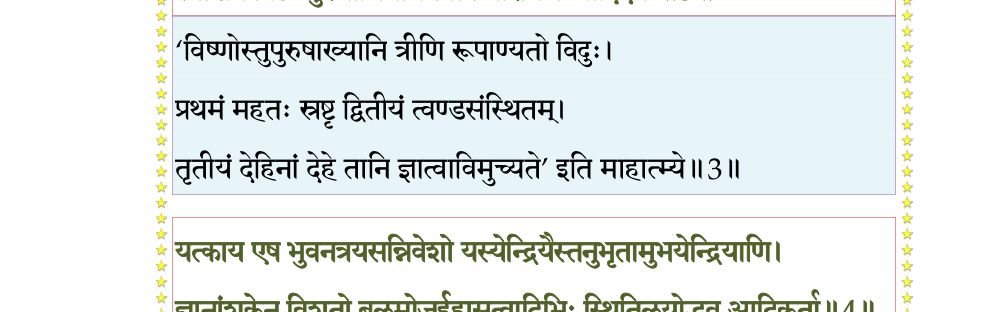
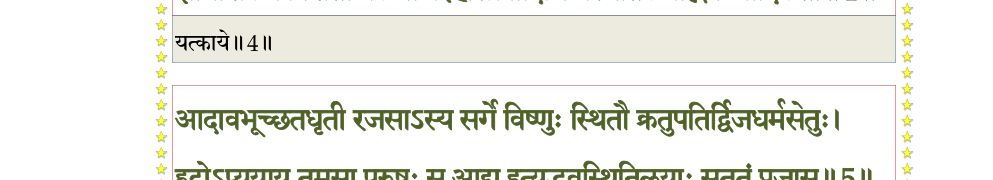
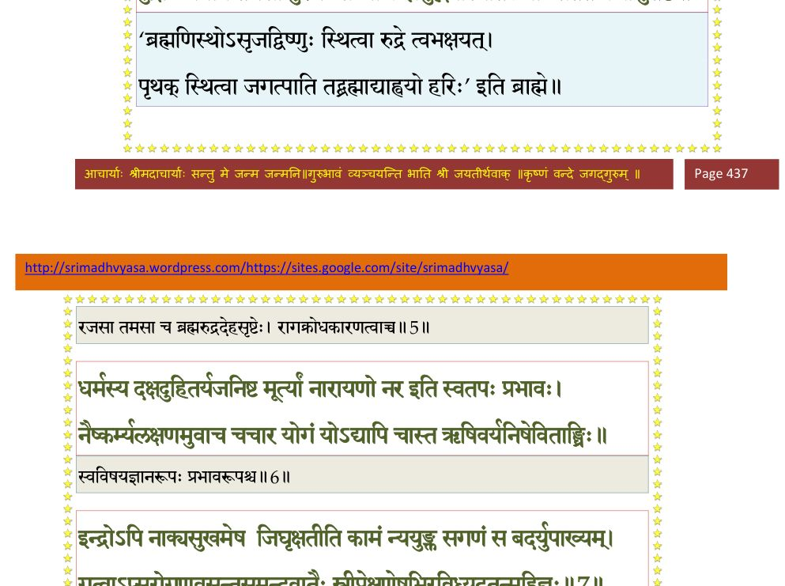
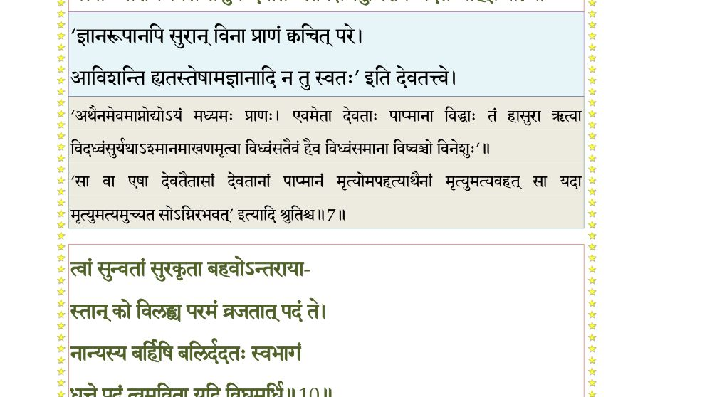
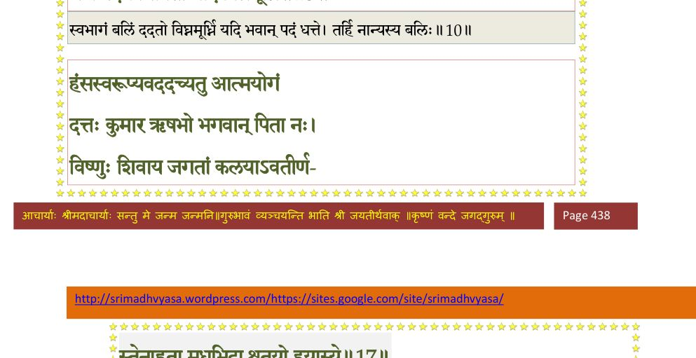
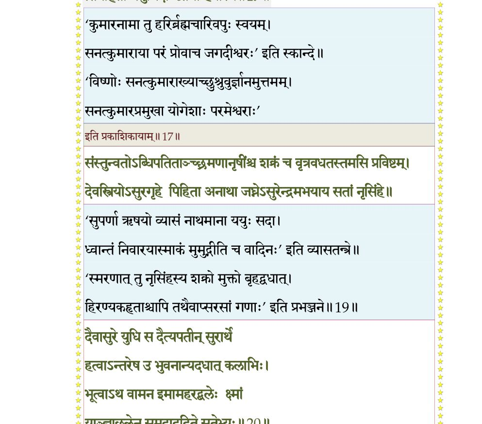
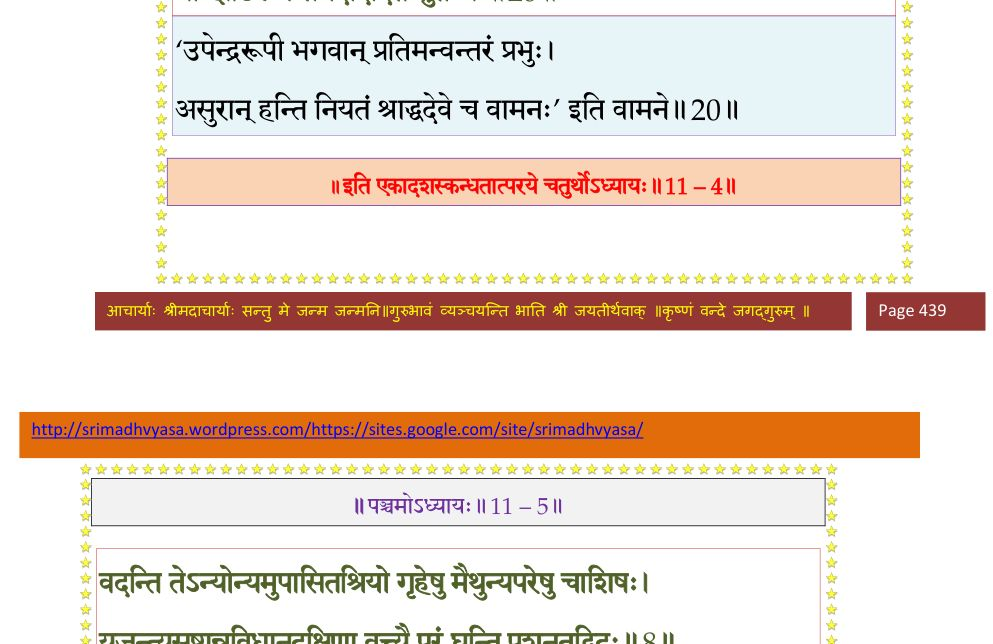

स्कन्ध 11 · अध्याय 4
श्लोक १
राजोवाच–
यानि यानीह कर्माणि यैर्यैः स्वच्छन्दजन्मभिः ।
चक्रे करोति कर्ता वा हरिस्तानि ब्रुवन्तु नः।। १ ।।
यानि यानीह कर्माणि यैर्यैः स्वच्छन्दजन्मभिः ।
चक्रे करोति कर्ता वा हरिस्तानि ब्रुवन्तु नः।। १ ।।
श्लोक २
द्रुमिल उवाच–
यो वा अनन्तस्य गुणाननन्ताननुक्रमिष्येत् स तु बालबुद्धिः ।
रजांसि भूमेर्गणयेत् कथञ्चित् कालेन नैवाखिलसत्वधाम्नः ।। २ ।।
यो वा अनन्तस्य गुणाननन्ताननुक्रमिष्येत् स तु बालबुद्धिः ।
रजांसि भूमेर्गणयेत् कथञ्चित् कालेन नैवाखिलसत्वधाम्नः ।। २ ।।
श्लोक ३
भूतैर्यदा पञ्चभिरात्मसृष्टैः पुरं विराजं विरचय्य तस्मिन् ।
स्वांशेन विष्टः पुरुषाभिधानमवाप नारायण आदिदेवः।। ३ ।।
स्वांशेन विष्टः पुरुषाभिधानमवाप नारायण आदिदेवः।। ३ ।।
भागवततात्पर्यनिर्णय

श्लोक ४
यत्काय एष भुवनत्रयसन्निवेशो
यस्येन्द्रियैस्तनुभृतामुभयेन्द्रियाणि ।
ज्ञानांशकेन विशतो बलमोज ईहा
सत्त्वादिभिः स्थितिलयोद्भव आदिकर्ता।। ४ ।।
यस्येन्द्रियैस्तनुभृतामुभयेन्द्रियाणि ।
ज्ञानांशकेन विशतो बलमोज ईहा
सत्त्वादिभिः स्थितिलयोद्भव आदिकर्ता।। ४ ।।
भागवततात्पर्यनिर्णय

श्लोक ५
आदावभूच्छतधृती रजसाऽस्य सर्गे
विष्णुः स्थितौ क्रतुपतिर्द्विजधर्मसेतुः ।
रुद्रोऽप्ययाय तमसा पुरुषः स आद्य
इत्युद्भवस्थितिलयाः सततं प्रजासु।। ५ ।।
विष्णुः स्थितौ क्रतुपतिर्द्विजधर्मसेतुः ।
रुद्रोऽप्ययाय तमसा पुरुषः स आद्य
इत्युद्भवस्थितिलयाः सततं प्रजासु।। ५ ।।
भागवततात्पर्यनिर्णय

श्लोक ६
धर्मस्य दक्षदुहितर्यजनि स्वमूर्त्या
नारायणो नर इति स्वतपःप्रभावः ।
नैष्कर्म्यलक्षणमुवाच चचार योगं
योऽद्यापि चास्त ऋषिवर्यनिषेविताङ्घ्रिः।। ६ ।।
नारायणो नर इति स्वतपःप्रभावः ।
नैष्कर्म्यलक्षणमुवाच चचार योगं
योऽद्यापि चास्त ऋषिवर्यनिषेविताङ्घ्रिः।। ६ ।।
श्लोक ७
इन्द्रोऽपि नाक्यसुखमेष जिघृक्षतीति
कामं न्ययुङ्क्त सगणं (च) स बदर्युपाख्यम् ।
गत्वाऽप्सरोगणवसन्तसुमन्दवातैः
स्त्रीप्रेक्षणेषुभिरविध्यदतन्महिज्ञः।। ७ ।।
कामं न्ययुङ्क्त सगणं (च) स बदर्युपाख्यम् ।
गत्वाऽप्सरोगणवसन्तसुमन्दवातैः
स्त्रीप्रेक्षणेषुभिरविध्यदतन्महिज्ञः।। ७ ।।
भागवततात्पर्यनिर्णय

श्लोक ८
विज्ञाय शक्रकृतमक्रममादिदेवः
प्राह प्रहस्य गतविस्मय एजमानान् ।
मा भैर्विभो मदनमारुतदेववध्वो
गृह्णीत नो बलिमशून्यमिमं कुरुध्वम्।। ८ ।।
प्राह प्रहस्य गतविस्मय एजमानान् ।
मा भैर्विभो मदनमारुतदेववध्वो
गृह्णीत नो बलिमशून्यमिमं कुरुध्वम्।। ८ ।।
श्लोक ९
इत्थं ब्रुवत्यभयदे नरदेवदेवे
सव्रीडनम्रशिरसः सघृणं तमूचुः ।
नेयं विभो त्वयि परेऽविकृतिर्विचित्रा
स्वारामधीरनिकरानतपादपद्मे।। ९ ।।
सव्रीडनम्रशिरसः सघृणं तमूचुः ।
नेयं विभो त्वयि परेऽविकृतिर्विचित्रा
स्वारामधीरनिकरानतपादपद्मे।। ९ ।।
श्लोक १०
त्वां सुन्वतां सुरकृता बहवोऽन्तरायाः
कस्तान् विलंघ्य व्रजतात् परमं पदं ते ।
नान्यस्य बर्हिषि बलिं ददतः स्वभागं
धत्ते पदं त्वमविता यदि विघ्नमूधर्ि्न।। १० ।।
कस्तान् विलंघ्य व्रजतात् परमं पदं ते ।
नान्यस्य बर्हिषि बलिं ददतः स्वभागं
धत्ते पदं त्वमविता यदि विघ्नमूधर्ि्न।। १० ।।
भागवततात्पर्यनिर्णय

श्लोक ११
क्षुत्तृट्त्रिकालगुणमारुत जैह्वशैश्न्या-
दस्मादपारजलधेरतितीर्य केचित् ।
क्रोधस्य यान्ति विफलस्य वशे पदे गो-
र्मज्जन्ति दुश्चरतपश्च वृथोत्सृजन्ति।। ११ ।।
दस्मादपारजलधेरतितीर्य केचित् ।
क्रोधस्य यान्ति विफलस्य वशे पदे गो-
र्मज्जन्ति दुश्चरतपश्च वृथोत्सृजन्ति।। ११ ।।
श्लोक १२
इति प्रगृणतां तेषां स्त्रियोऽत्यद्भुतदर्शनाः ।
दर्शयामास शुश्रूषां(षाः) स्वार्चने कुर्वतीर्विभुः।। १२ ।।
दर्शयामास शुश्रूषां(षाः) स्वार्चने कुर्वतीर्विभुः।। १२ ।।
श्लोक १३
ते देवानुचरा दृष्ट्वा स्त्रियः श्रीरिव रूपिणीः ।
गन्धेन मुमुहुस्तासां रूपौदार्यहृतश्रियः।। १३ ।।
गन्धेन मुमुहुस्तासां रूपौदार्यहृतश्रियः।। १३ ।।
श्लोक १४
तानाह देवदेवेशः प्रणतान् प्रहसन्निव ।
आसामेकतमां वृङ्ध्वं सुवर्णां स्वर्गभूषणाम्।। १४ ।।
आसामेकतमां वृङ्ध्वं सुवर्णां स्वर्गभूषणाम्।। १४ ।।
श्लोक १५
ओमित्यादेशमादाय नत्वा तं सुरबन्दिनः ।
उर्वशीमप्सरःश्रेष्ठां पुरस्कृत्य दिवं ययुः।। १५ ।।
उर्वशीमप्सरःश्रेष्ठां पुरस्कृत्य दिवं ययुः।। १५ ।।
श्लोक १६
इन्द्रायानम्य सदसि शृण्वतां त्रिदिवौकसाम् ।
ऊचुर्नारायणबलं शक्रस्तत्रास विस्मितः।। १६ ।।
ऊचुर्नारायणबलं शक्रस्तत्रास विस्मितः।। १६ ।।
श्लोक १७
हंसस्वरूप्यवददच्युत आत्मयोगं
दत्तः कुमार ऋषभो भगवान् पिता नः ।
विष्णुः शिवाय जगतां कलयाऽवतीर्ण-
स्तेनाहृता मधुभिदा श्रुतयो हयास्ये।। १७ ।।
दत्तः कुमार ऋषभो भगवान् पिता नः ।
विष्णुः शिवाय जगतां कलयाऽवतीर्ण-
स्तेनाहृता मधुभिदा श्रुतयो हयास्ये।। १७ ।।
भागवततात्पर्यनिर्णय

श्लोक १८
गुप्ताऽप्यये मनुरिला ऋषभश्च मात्स्ये
क्रोडे हतो दिविज उद्धरतोऽम्भसे क्ष्माम् ।
कौर्मे धृतोऽद्रिरमृतोन्मथने स्वपृष्ठे
ग्राहात् प्रपन्नमिभराजममुञ्चदार्तम्।। १८ ।।
क्रोडे हतो दिविज उद्धरतोऽम्भसे क्ष्माम् ।
कौर्मे धृतोऽद्रिरमृतोन्मथने स्वपृष्ठे
ग्राहात् प्रपन्नमिभराजममुञ्चदार्तम्।। १८ ।।
श्लोक १९
संस्तुन्वतोऽब्धिपतितांच्छ्रमणान् ऋषींश्च
शक्रं च वृत्रवधतस्तमसि प्रविष्टम् ।
देवस्त्रियोऽसुरगृहे पिहिता अनाथा
जघ्नेऽसुरेन्द्रमभयाय सतां नृसिंहे।। १९ ।।
शक्रं च वृत्रवधतस्तमसि प्रविष्टम् ।
देवस्त्रियोऽसुरगृहे पिहिता अनाथा
जघ्नेऽसुरेन्द्रमभयाय सतां नृसिंहे।। १९ ।।
श्लोक २०
देवासुरे युधि स दैत्यपतीन् सुरार्थे
हत्वाऽन्तरेषु भवनान्यदधात् कलाभिः ।
भूत्वाऽथ वामन इमामहरद् बलेः क्ष्मां
याञ्चाछलेन समदाददितेः सुतेभ्यः।। २० ।।
हत्वाऽन्तरेषु भवनान्यदधात् कलाभिः ।
भूत्वाऽथ वामन इमामहरद् बलेः क्ष्मां
याञ्चाछलेन समदाददितेः सुतेभ्यः।। २० ।।
भागवततात्पर्यनिर्णय

श्लोक २१
निःक्षत्रियामकृत गां च त्रिसप्तकृत्वः
रामस्तु हैहयकुलाप्ययभार्गवाग्निः ।
सोऽब्धिं बबन्ध दशवक्त्रमहन् स लङ्कां
सीतापतिर्जयति लोकमलङ्घ्यकीर्तिः।। २१ ।।
रामस्तु हैहयकुलाप्ययभार्गवाग्निः ।
सोऽब्धिं बबन्ध दशवक्त्रमहन् स लङ्कां
सीतापतिर्जयति लोकमलङ्घ्यकीर्तिः।। २१ ।।
श्लोक २२
भूमेर्भरावतरणाय यदुष्वजन्मा
जातः करिष्यति सुरैरपि दुष्कराणि ।
वादैर्विमोहयति यज्ञकृतोऽतदर्हान्
शूद्रान् कलेः क्षितिभुजो न्यहनिष्यदन्ते।। २२ ।।
जातः करिष्यति सुरैरपि दुष्कराणि ।
वादैर्विमोहयति यज्ञकृतोऽतदर्हान्
शूद्रान् कलेः क्षितिभुजो न्यहनिष्यदन्ते।। २२ ।।
श्लोक २३
एवं विधानि कर्माणि जन्मानि च जगत्पतेः ।
भूरीणि भूरियशसो वर्णितानि महाभुज।। २३ ।।
भूरीणि भूरियशसो वर्णितानि महाभुज।। २३ ।।
।। इति श्रीमद्भागवते एकादशस्कन्धे चतुर्थोऽध्यायः ।।